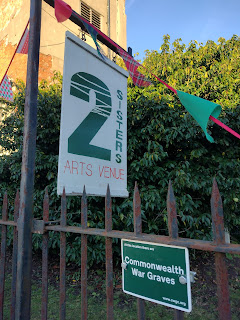
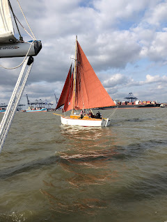
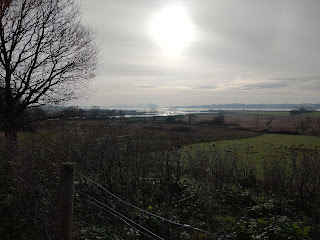
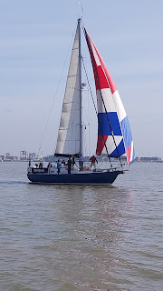
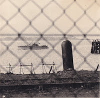
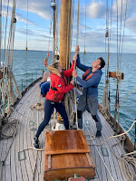

 |
| Outside the 2 sisters arts centre |
Meg Reid of the Felixstowe Book Festival brought a new word into my vocabulary when she asked me to ‘curate’ a day’s events at the Two Sisters’ Arts Centre on Saturday June 25th 2022. The title of the event would be Suffolk and the Sea - the vital words, for me, were books and boats..
I soon realised that the two were already linked by a footpath running from Suffolk Yacht Harbour at Levington, where I could moor my boat Peter Duck, to Trimley St Mary, location of the arts centre where we would talk about books. The event began to take a yet more appealing shape when I realised how close we were to Broke House, Levington, where Arthur Ransome lived when he was writing his masterpiece We Didn’t Mean To Go To Sea. Our first festival guest should be Nancy Blackett – ‘Goblin’ from the story – who could come and join Peter Duck in the yacht harbour. Book festival attendees could come and meet the boats as well. Perhaps some of them will arrive by boat and use the footpath to reach the festival.
 |
| Nancy Blackett / 'Goblin' coming in to Felixstowe |
The event is to be in Jubilee month, celebrating the only monarch who people of my 1954 vintage have ever known and perhaps reflecting on some of the changes that have occurred in those 70 glorious years. There wasn't a Suffolk Yacht Harbour in 1952 – the concept was as unthought of as the notion of repurposing a redundant church as an Arts Centre. Has the relationship of Suffolk and the Sea changed in the period of the Queen's reign?
If you were to make your way up to the top of the church tower (or more likely the tower of its neighbouring church of St Martin) you would glimpse the distant River Orwell and the horizon-busting cranes of the Port of Felixstowe “best connected to the world” – as its website will tell you. The cranes and the massive container ships are new since Elizabeth II became Queen: nevertheless the position of Suffolk as a county connected to the world by sea is as old as – King Raedwald, perhaps?
Looking south from the tower, you probably wouldn’t see the sea because of the busy coastal town of Felixstowe blocking your way. Only the name of the next village, Walton, might remind you that there was once a castle of that name defending the Saxon Shore, until it was engulfed by the waves. Another 90degree turn eastwards and you’re looking towards the Falkenham marshes, to Kings Fleet and the River Deben. But even from your vantage point perched high on the backbone of this spit of land running between the two rivers, you won’t see the harbour where King Edward III gathered his ships before sailing to Flanders in the Hundred Years War. The river has silted, the entrance has narrowed: only the place name preserves the traces of memory.
 |
| Looking down the Orwell from Levington towards the container port |
There are many such lost locations buried or drowned off the Suffolk coast and underneath its marshes. The relationship of Suffolk and the Sea has always been a shifting one. Our first session of the day will be introduced by Peter Wain, historian of the lost port of Goseford (near Bawdsey) and contributor to newly published research into the catastrophic storm surges that changed the shape of the Suffolk coastline in mediaeval times. Our first speaker, Juliet Blaxland, lost her cliff top home to the sea in 2020. For a while hers was The Easternmost House in England. Now all that remains are her memories and The Easternmost Sky. She still lives in Suffolk but describes herself as 'an environmental evacuee'. Joining her will be local historian Robert Simper who has watched the slow depopulation of his Deben village while devoting his writing lifetime to researching and recording Suffolk’s working boats and the people who have made their livings from rivers and the coastal trade. His most recent book is The Lost Village of Ramsholt.
Coastal Suffolk is fighting a constant battle with the sea – a battle which looks set to become harder as sea levels rise. As you continue your 360degree observation from the church tower, returning towards the Orwell as it winds north and northwest to Ipswich you may not see the expanse of the Trimley, Levington and Stratton marshes but they too represent inundated land. A c19th estimate of the two Trimley parishes describe them as covering “acres 2,338 and 2,208; of which 200 and 340 are water.” In 1942 a tidal surge overwhelmed the sea defences that had been constructed by Napoleonic prisoners of war and made former grazing land unusable. Twenty-five years later, in 1967, a small group of yachting enthusiasts began to dig out the black mud and construct the yacht harbour where our boats will be lying securely and where new maritime businesses are based. The container port was also opened that year. Between them the Trimley marshes look timeless but are not. Currently they are an important nature reserve, managed by the Suffolk Wildlife Trust, which was founded in 1961. Development of national parks and nature reserves have been a feature of the Queen's reign as our anxiety about the natural world becomes more conscious and the damage greater.
As you climb down from the tower, in your imagination, you may begin to wonder how all these things link up – if they do. How to describe the relationship between Suffolk and the Sea? It’s geological and geographical, it offers threats and opportunities, disasters and delights, comfort and challenge.
Two speakers in the second session, Claudia Myatt and Jane Russell, develop an idea of the sea as a means of connection, offering people opportunities for artistic and intellectual exchange, for exploration and trade as well as invasions and warfare. Claudia is an artist and writer who lives on the River Deben and has become increasingly fascinated by the evidence of cultural sophistication and international links offered by the designs from the Anglo-Saxon treasures at Sutton Hoo. Her most recent publication is a simple drawing book where readers are encouraged to explore some of the intricacies of the ornamentation by creating their own.
Jane Russell also favours a hands-on approach to learning. She is a cruising sailor with 30 years of experience, including a 5-year circumnavigation with her husband, David and a 15-month voyage to the Mediterranean and back with their children. To find your way around the globe, as a sailor, you need to learn from those who have gone before. Ships' captains and amateur sailors all keep log books: the British Admiralty and private organisations – some commercial, some scientific - have put centuries of painstaking effort into surveying and charting the waters of the world. Jane works as editor at the chart-makers Imray, whose history goes back to the c18th. She is also the Royal Cruising Club Pilotage Foundation’s Editor in Chief. She is author of the Foundation’s Atlantic Crossing Guide and editor of the Royal Institute of Navigation Electronic Navigation Systems - Guidance for safe use on leisure vessels. The principles of navigation may be the same, its tools and techniques have changed radically. These days Jane and her husband moor their yacht Tinfish II on the River Orwell. On June 25th they will bring her into Suffolk Yacht Harbour if festival visitors are interested to see a much-travelled cruising yacht as well as learn something about the processes that make a 21st century pilot guide.
 |
| Tinfish II - a cruising yacht |
From Suffolk, the sea can lead us to the extremities of the earth. Claudia Myatt has recently returned from Antarctica where she is currently artist in residence for the Friends of the Scott Polar Institute. As well as filling her sketchbook, the time she’s spent on a Royal Navy survey ship this year visiting South Georgia and the Antarctic Continent has given her a new perspective on the relationship between humans and their environment. She needs to express this in words as well as paint.
Richard Woodman has spent much of his working life ensuring safe navigation round the British Isles He was a Captain in Trinity House, the corporation which was founded in the reign of Henry VIII, to attempt to make it safer to sail round the British coasts. It too has seen almost unimaginable change in recent decades as the lighthouses have been automated and the lightvessels unmanned. Visit the Suffolk Yacht Harbour and you'll see a redundant light vessel now used as a club house. Look across the river to Harwich and you are looking at the location from which the entire UK system of navigation marks is managed. But Richard Woodman isn’t joining the Felixstowe Book Festival primarily as an Elder Brother of Trinity House. He is also one of our foremost maritime historians – focussing particularly on the history merchant navy, in which he served as a young man, before there were container ships. Astonishingly he has written over thirty novels but says his most recent publication A River in Borneo will be his last. I feel proud to celebrate such an extraordinary career.
If you ask Richard Woodman where his passion for the sea began, he will tell you it was when he first read Arthur Ransome’s We Didn’t Mean To Go To Sea – written from this stretch of Suffolk river. How would youngsters without sailing parents, or people without much money or confidence, or disabled people, get to sea today if they felt similarly inspired?
Peter Willis, chairman of the Nancy Blackett Trust and author of Good Little Ship, Nancy’s biography, will lead a session which focusses on the work of sailing trusts and sailing charities who enable people, young or old, to make their dreams reality, push off from the shore and discover the wide world of the sea. If you visit Suffolk Yacht Harbour during the book festival you will meet Duet – the longest serving sail training vessel in the UK. She was built in 1912 and was owned for many years by polar explorer Augustine Courtauld whose autobiography Man the Ropes has recently been republished and some of whose family will be at the event.
 |
| August Courtauld was one of many WW2 naval volunteers. Here he is setting off from HMS Beehive, Felixstowe 1941 |
 |
| Young sailors on August Courtauld's former yacht, Duet |
Though August Courtauld had lived in Essex, his oldest son, Rev Christopher Courtuald, spent the last years of his life in Levington – in that house where Arthur Ransome had lived. Christopher Courtauld donated Duet first to the Ocean Youth Club and then to the Cirdan Sailing trust so that she should take many more people to sea. Leonie Black, CEO of the Cirdan Trust, will explain how that works today and why Going to Sea might be a life changing experience. The Suffolk Yacht Harbour at Levington is also the base for the East Anglian Sailing Trust which offers people who are physically disabled opportunities to sail regularly. Simon Dawes, a former customs officer, who is blind, explains how this works for him.

There were many more men and women who served, survived and didn’t talk about their wartime experience.
The Queen is a member of the last age group who will have direct memories of those years. We can honour her both as a member of that special generation and also as a witness to the courage of others. I hope I’ll be joined in the Arts Centre on Saturday June 25th by other sons and daughters who have helped me tell their parents’ stories. We'll want to express our gratitude to them, in their absence. Then maybe we'll go and spend an peaceful evening with Nancy Blackett, Peter Duck, Duet and Tinfish II or somewhere beside the sea, with a book.
| https://felixstowebookfestival.co.uk/ |